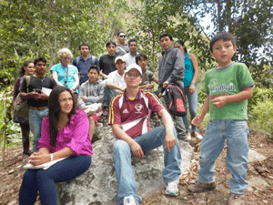

TURISMO TIENE QUE SER MANEJADO CON GENTE PROPIA
INTEÑOS APRENDEN INGLÉS
PARA SER GUÍAS TURÍSTICOS

Para potenciar el turismo en Íntag y ofrecer mejores servicios, unos 20 inteños aprenden inglés. La razón es que el turista extranjero utiliza cotidianamente el idioma inglés y es pertinente que los mismos inteños puedan comunicarles sus potenciales. Desde el 30 de julio, las clases son los viernes y sábados durante 12 horas. En el Complejo Nangulví, Mary Ellen Fieweger y Carolina Carrión, editoras del Periódico ÍNTAG, dictan las clases. Éstas tendrán una duración de seis meses. La fundación Ayuda en Acción, Pro–Derechos Ciudadanos (PRODECI) es la auspiciante.
La Red Ecoturística de Íntag (REI) ha estado trabajando en el mejoramiento y la promoción del turismo en la Zona. El objetivo es generar alternativas que mejoren la economía pero de una manera sustentable y que los ingresos queden para los mismos inteños. Ese es uno de los objetivos para que los mismo inteños aprendan inglés y sean ellos los que manejen el turismo en Íntag. Lo fundamental, según Nelson Vetancourt, técnico de PRODECI para el área de turismo, es que todos los que están aprendiendo inglés lleguen a ser guías especializados en turismo.
En la apertura del curso, Ruth Almeida, coordinadora de PRODECI, afirmó que el aprendizaje del inglés por parte de inteños será un avance importante para el turismo. Habrá personal capacitado en la misma Zona para atender a los visitantes.
Los participantes aprenderán un lenguaje relacionado a las actividades turísticas. Aprenden lo básico en el aula y salen al campo para recoger nuevo vocabulario y practicar lo aprendido. Van a los sitios donde guiarán a los turistas que visiten Íntag.
En el curso participan un grupo seleccionado por los miembros de la REI. Los participantes son integrantes de organizaciones socias de la REI y de comunidades que se dedican al turismo. El señor Vetancourt explica que de esa manera participan de varios lugares de la Zona. Ellos están comprometidos a duplicar los conocimientos dentro de la organización y la comunidad.
Al inicio, los participantes firmaron una carta de compromiso con la REI y PRODECI donde aseguran terminar el curso y a futuro ofertar sus conocimientos en la demanda turística. El técnico asegura que sí hay una buena participación y que responde a las expectativas de los directivos de la REI.
Esta también es una necesidad de la REI y la Corporación Toisán para la conformación de la operadora de turismo de la zona de Íntag. Dentro de esta, requieren de guías con conocimientos de inglés básico, como un medio de comunicación para los turistas.